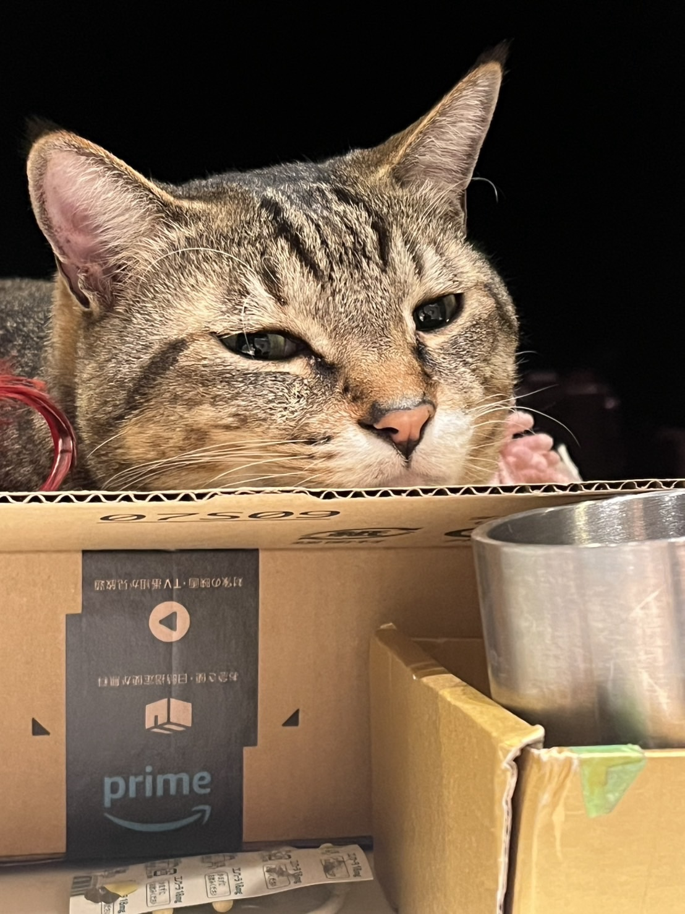

うみねこ

About
さまざまなアルバイト経験があります。
将来は、音楽と光で人に感動を与える仕事に就きたいと考えています。
Profile
名前 北村 愛梨
所在地 石川県白山市
得意領域 音楽
Skills
OS
Windows
Engine, Frameworks
Tool, MiddleWare
FL Studio, Canva
資格・免許
Works
GitHub
Contact
Mail
X(旧Twitter)
History
2025 年
学校法人角川ドワンゴ学園
ZEN大学
入学
2022 年
学校法人角川ドワンゴ学園
S高等学校
卒業
好きな動画
Open Processing